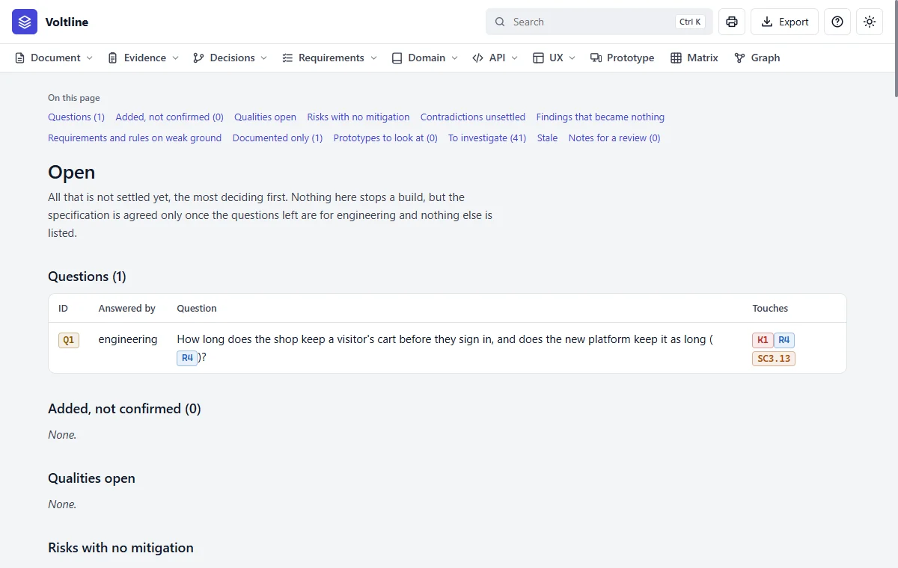
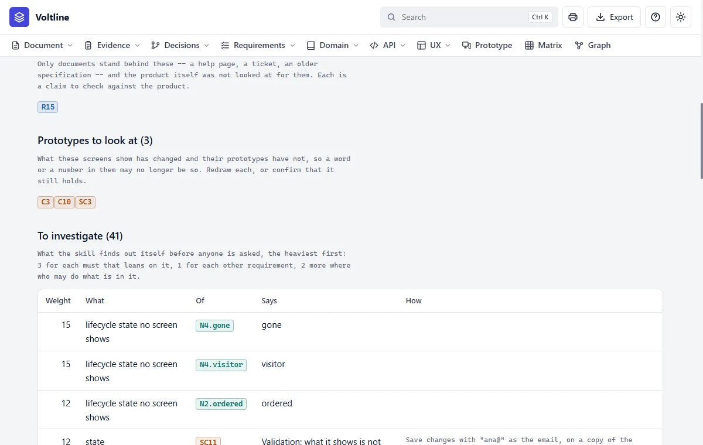
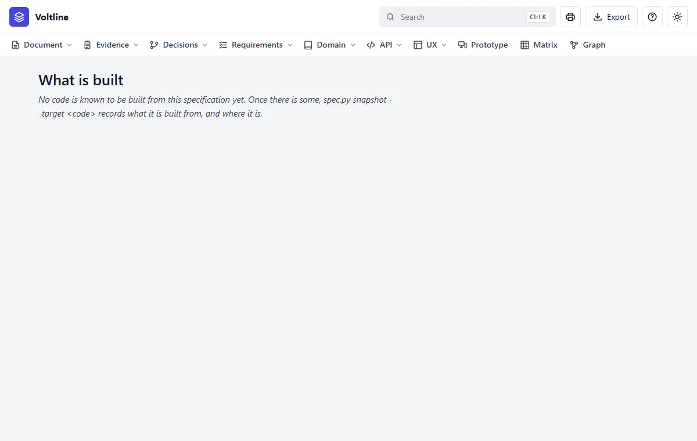

Part 3: Reading what you get
Open and stale
In everyday termsThe to-do list and the sticky notes. Open lists everything that isn't settled. Stale means something this depends on has changed, so please read it again.
What it answersWhat isn't settled, what needs reading again, and what's been built?
What is open

| Section | What it lists | Holds up an agreement? |
|---|---|---|
| Questions | What's still asked, and who answers | Those for the product side |
| Added, not confirmed | What the skill added on its own judgement | Yes |
| Qualities open, Risks with no mitigation | What's been left unfinished | Yes |
| Contradictions unsettled, Findings that became nothing | Evidence with no end | Yes |
| Weak ground, Documented only | Requirements that rest on little | No: claims to check |
| Prototypes to look at | Screens whose words moved while the file didn't | Yes |
| To investigate | What nobody has seen yet, the heaviest first, and how to find out | No |
| Stale | What must be read again | Yes |
Stale


- 1What changed, old word and new, and through which link.
- 2What to do next. Read it, then confirm it.
- 3Why it matters. This still says 1 to 5, so it needs changing.
Prototypes to look at

What is built

Stale also works the other way: when the specification has moved on since the code was built, spec.py changed lists what to redo. See Building from it.
Read it like this
- Start at the top of What is open: it's sorted, the most deciding first.
- Take stale nodes one at a time. Read the notice, then the node, and change it or confirm it.
- Never confirm a node you haven't read. Confirming is your word that you did.
Mistakes people make
- Confirming in bulk. It clears the list and proves nothing.
- Treating To investigate as a to-do list for today. It's what's unknown. Weigh it against what you're about to decide.